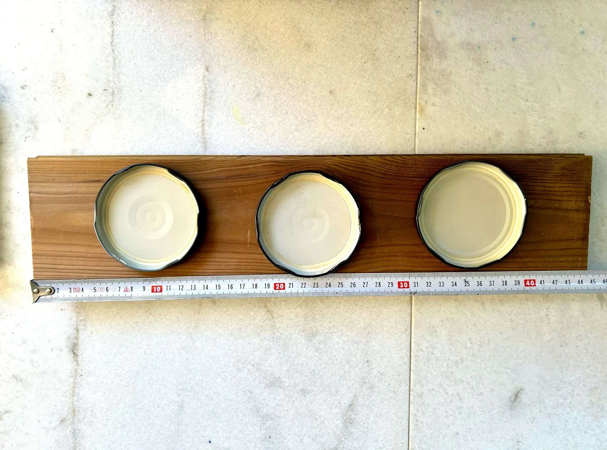
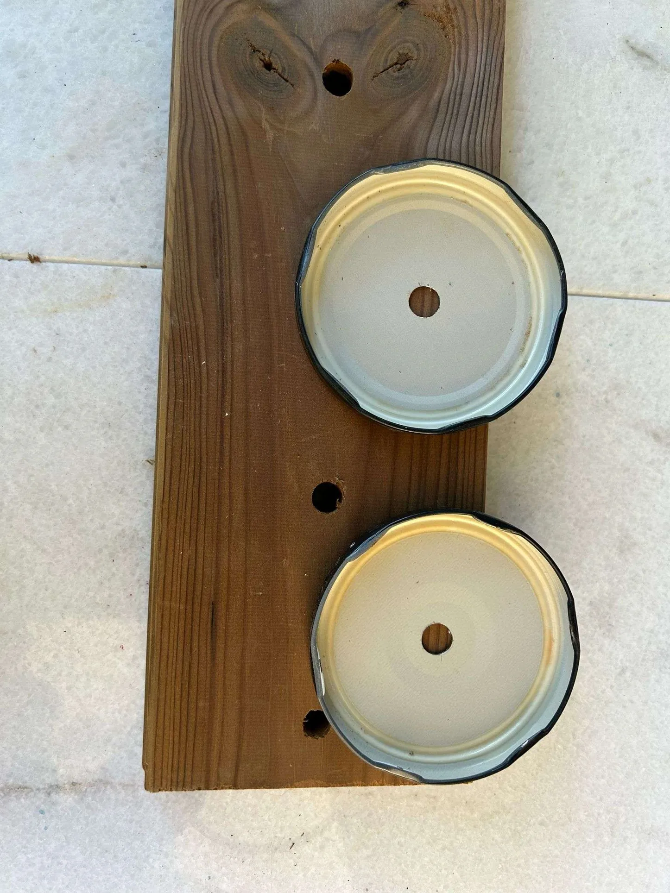
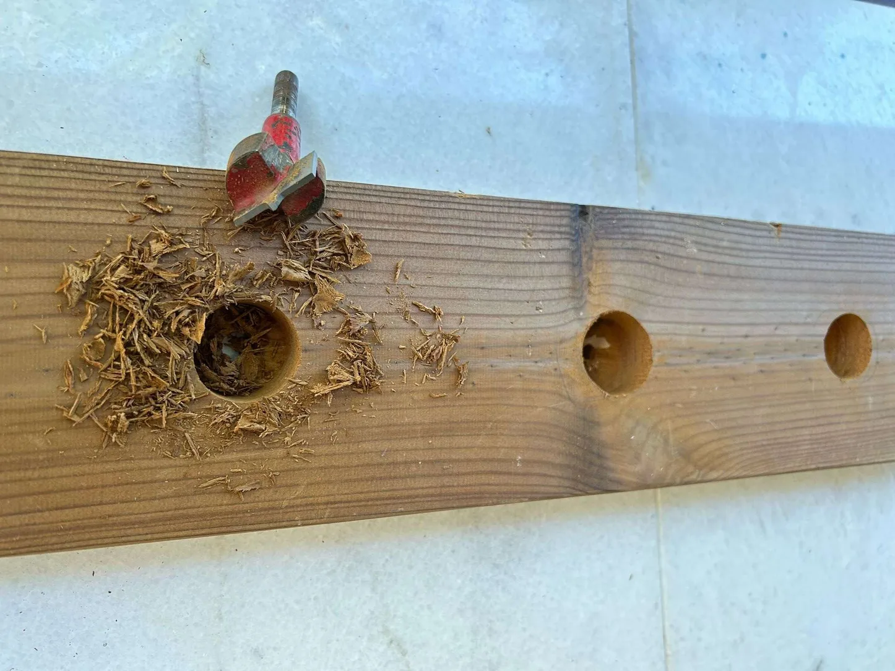
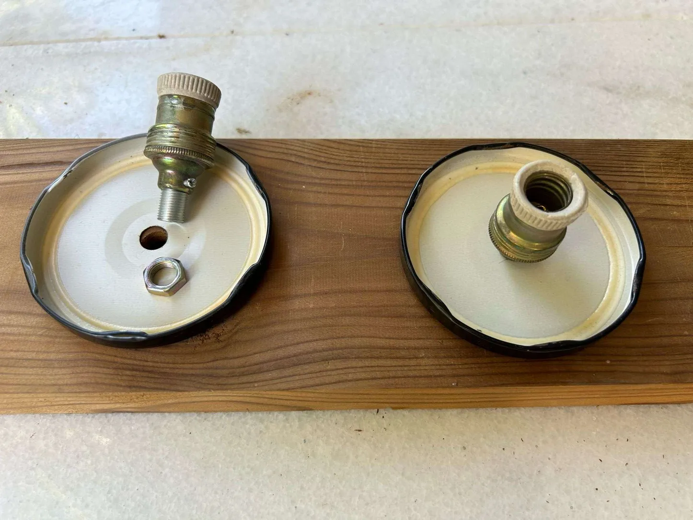
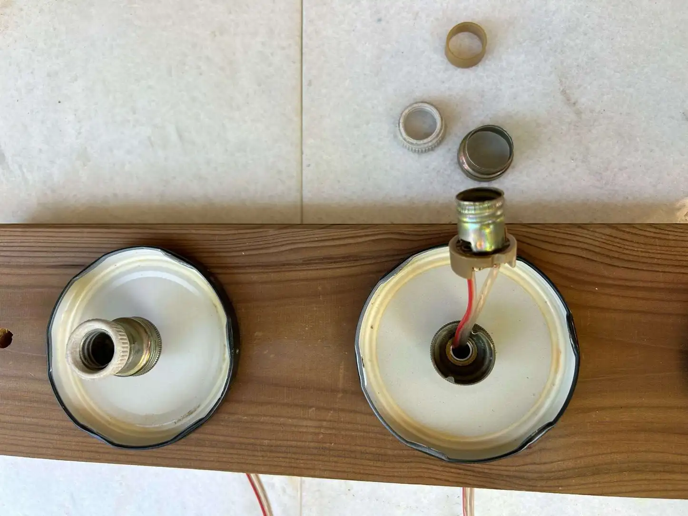
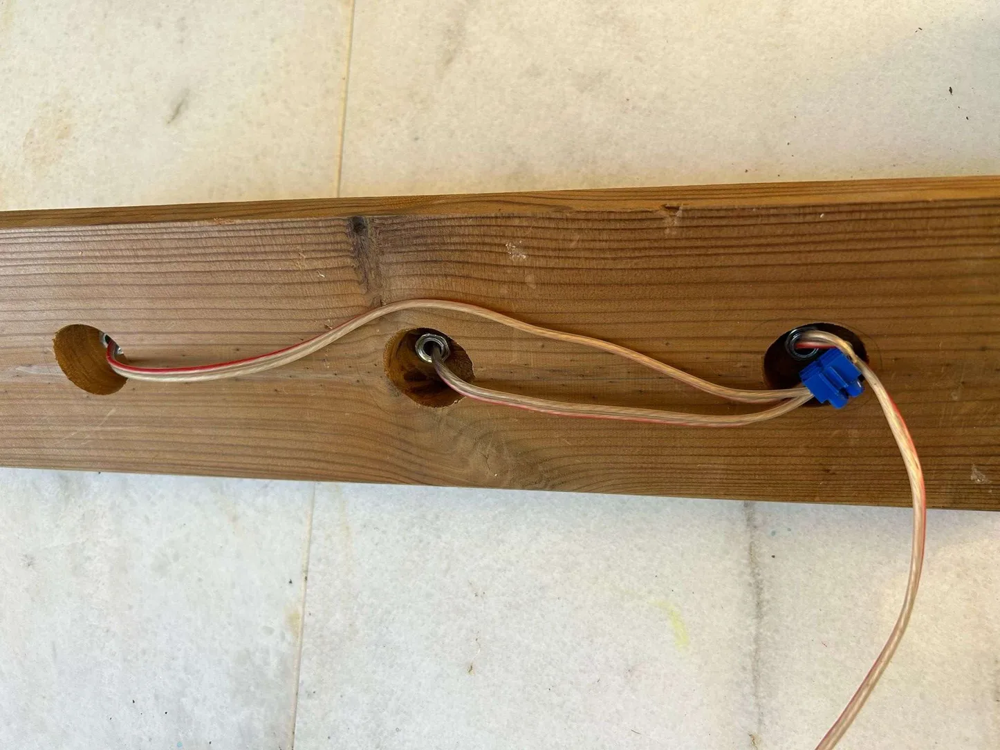
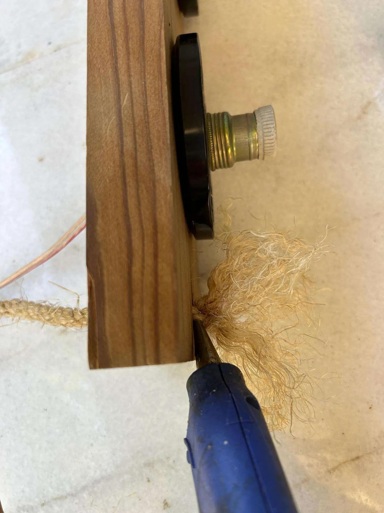
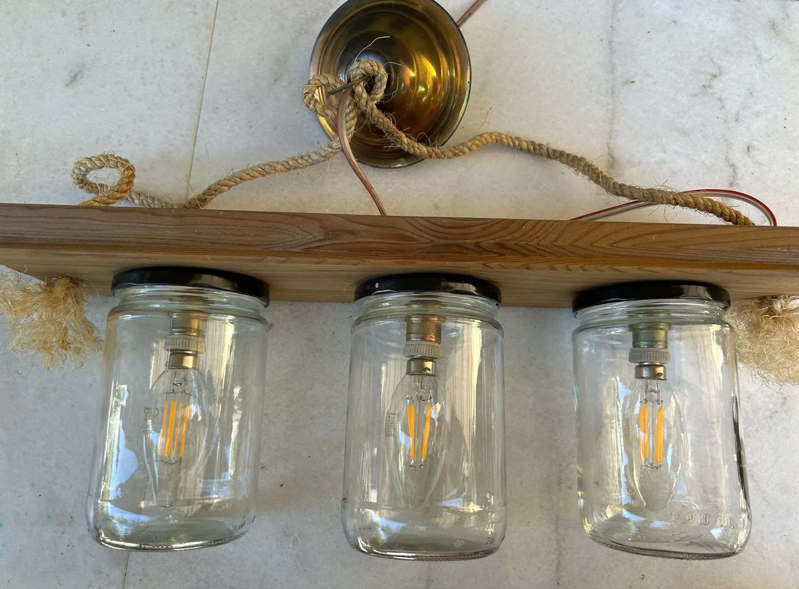
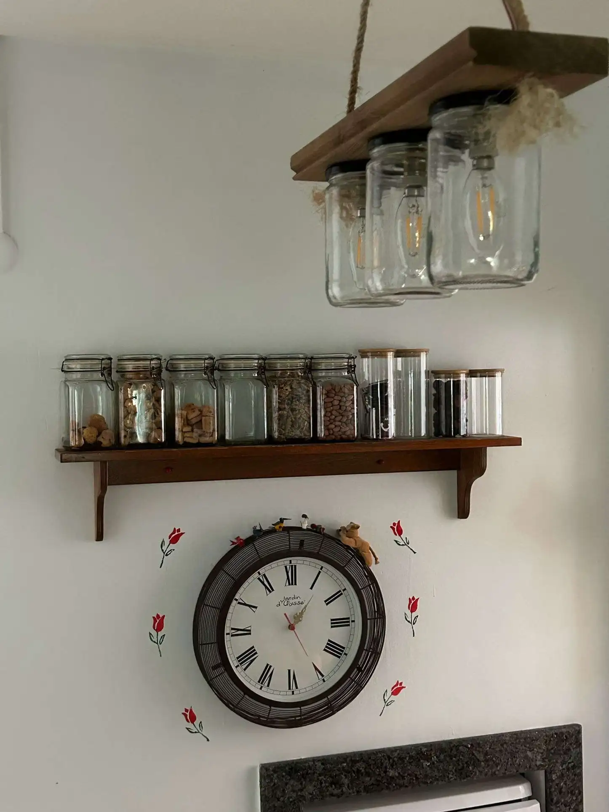
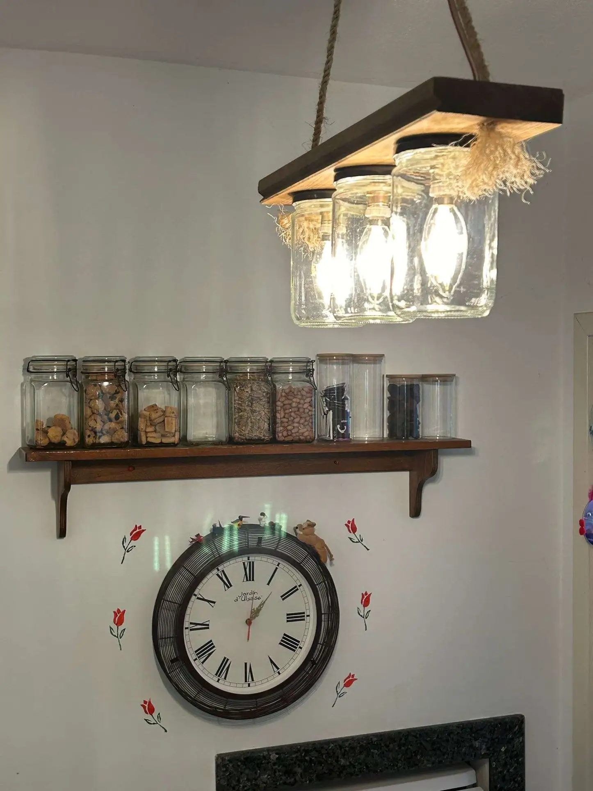

Description
Join us as we explore the art of crafting DIY glass jar pendant lights from mason jars in just 10 simple steps, infusing your home with the inviting glow of handmade decor. As someone who loves DIY home projects, you likely appreciate the versatility of mason jars in adorning your living space. From glittery fairy lights to candle stands, these jars offer endless creative possibilities.
In this rustic homemade pendant light project, we'll take mason jar decor to a whole new level, adding a vintage touch to your home decor. Whether you call them DIY hanging mason jar lamps or DIY mason jar pendant lights, these creations will immediately become the centrepiece of your open living space.
So, if you're eager to elevate your home with the enchanting allure of mason jar lighting decor, you've come to the right place. Our simple DIY mason jar pendant light tutorial will guide you through the process of how to make a mason jar light. Armed with just a few basic materials like a long piece of wood, three mason jars with lids, bulbs of your choice, electrical cable, a drill, and a hanger, you'll soon be on your way to illuminating your space with handmade brilliance.
Let's start this exciting DIY mason jar project and discover how a mason jar can become a centrepiece of style and ambience in your living space.
Materials
Wood plank
3 Mason jars with lids
3 Bulbs
Electrical cable
Hanger
Drill
Step 1: Choose a Long Wooden Plank
Select a long wooden plank that will serve as the foundation for your DIY mason jar pendant light. Ensure it's long enough to accommodate three mason jars. Position the jar lids evenly along the plank and mark their placements.
Bonus Tip: Use a measuring tape to ensure equal spacing between the mason jars. This not only enhances the aesthetic appeal but also maintains balance and stability when suspended.
Step 2: Drill Holes as Needed
Using a drill machine, create the necessary holes. You'll need three holes for securing the mason jar lids and bulbs, and two additional holes for hanging the pendant light.
Bonus Tip: Smooth the surface of the plank with sandpaper for a polished finish. Consider varnishing or painting the wood to enhance its appearance and durability, as it will be a prominent part of your home decor.
Step 3: Enlarge Holes on the Opposite Side
Switch the drill attachment and enlarge the holes from the opposite side to about halfway through the plank's width. These larger holes will facilitate the attachment of screws for the bulb holders. Refer to the accompanying image for visual guidance.
Step 4: Secure Mason Jar Covers and Bulb Holders
Attach the mason jar lids and bulb holders securely to the plank, one by one. Ensure they are fixed from the smaller holes drilled earlier.
Bonus Tip: Double-check the alignment and stability of the jar lids and bulb holders to ensure they are securely fastened and properly positioned.
Step 5: Attach All Three Jar Lids and Bulb Holders
If you're crafting a pendant light with three bulbs, affix all three jar lids and bulb holders onto the wooden plank.
Step 6: Arrange Cables on the Back Side
Organize the electrical cables on the back side of the wooden plank, ensuring they are neatly arranged and securely fastened.
Step 7: Install Hangers on Both Sides
Thread the rope through the drilled holes to attach hangers for your DIY hanging mason jar lamp. Opt for rustic charm by using jute rope or choose a material that complements your desired aesthetic.Thread the rope through the drilled holes to attach hangers for your DIY hanging mason jar lamp. Opt for rustic charm by using jute rope or choose a material that complements your desired aesthetic.
Step 8: Complete Electrical Wiring
Connect the three electrical bulb cables to form a single connection point. Then, attach this cable to the main electrical wiring on the wall to complete the electrical installation.
Step 9: Hang the Rustic Chandelier
Suspend your DIY mason jar pendant light from a ceiling hook, allowing it to hang freely above the kitchen breakfast bar, dining table, or any desired location.
Step 10: Illuminate and Enjoy
Turn on the light switch and bask in the warm, rustic ambience created by your homemade hanging mason jar lamp.
DIY MasonJjar gift ideas
Mason Jar Terrarium: Create a mini indoor garden with moss, small plants, and decorative elements inside a Mason jar.Mason Jar Succulent Planter: Plant succulents in a Mason jar filled with soil and pebbles for a charming and low-maintenance gift.
Mason Jar Snow Globe: Make a festive snow globe by adding miniature figurines and fake snow to a Mason jar filled with water and glycerin.
Mason Jar Fairy Lights Lantern: Insert fairy lights into a Mason jar to create a magical lantern perfect for adding ambience to any room.
Mason Jar Soap Dispenser: Transform a Mason jar into a stylish soap dispenser by attaching a pump lid for a functional and decorative gift.